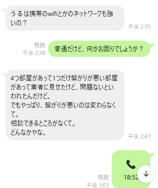

うるがいの話 ある日
最新: Wi-Fiが繋がらない【うるがいの話 ある日】とは 一日だけのプログです
『うるがいの話』の最新一日だけのプログで、通信料が少なく経済的だ。カニの画像をクリックすると全ての日付が載る『うるがいの話』サイトを表示します
|
|
【うるがいの話】 うるがい(ｳﾙｶﾞｲ urugai)とは、『もずくがに』の名前でとても大きくなります。 |
|---|---|
|
|
【カミマヤーの話】 猫のことを方言でマヤーといいます。カミマヤー（kamimayaa）とは、神の猫のことです。 |
|
【たながぁの音楽】 たながぁ（ﾀﾅｶﾞｰ tanagaa）とは手長えびのことで、何種類かあり大きいのは車 エビぐらいになります。 |

|
【ぶながぁの話】 ぶながぁ(ﾌﾞﾅｶﾞｰ bunagaa)とは、赤い髪の毛、赤い身体、そして身長は１ｍ２０ｃｍ ぐらい、川の蟹を食べているの目撃された。場所は沖縄県国頭郡大宜味村のと ある村僕の隣近所に住んでいる爺さんから、聞いた話です。 |
|
|
【ギーマの話】 ギーマ(giima)とは、山原の里山に咲くスズランに似た、 花を付けます。実は食べられます、 気が付くと口の周りが紫になっています。 |
2024年10月16日 (水）Wi-Fiが繋がらない
16:18
民泊を営んでいる同期から、ラインでヘルプの連絡があった。

そうそう、はるかに昔に購入して使っていない中継器があるジャンと取
扱説明書をネットからダウンロード。始めてなので戸惑うもののちゃん
と機能する事が分かった。
もう、業者を頼んでいるでしょうか
家に寝かしてしてあった中継器で、
機能を調べて使えそうなだと
取りあえず、報告します
超薄型11ac 2x2中継器 WTC-1167US-B
とある電波の弱い部屋に
この装置を設置すれば
いいかと
ただ、試してみないと
分からないすネ
業者がまだで、急ぎで無ければ
現地へいって試験する
応援しますヨ
明日以降になりますが
では
しばらくすると、ルーターの位置を移動したりして自分なりに試すらし
い。そして民泊は今月満杯とのこと。ホー、了解と返信する。繁盛して
なりよりである。ただし、電話でのやり取りではルーターの位置移動な
どではダメのようだが。マ、いいか
１６時１０分 ビットコインの総資産 ￥２８、９５７（↑５２９）